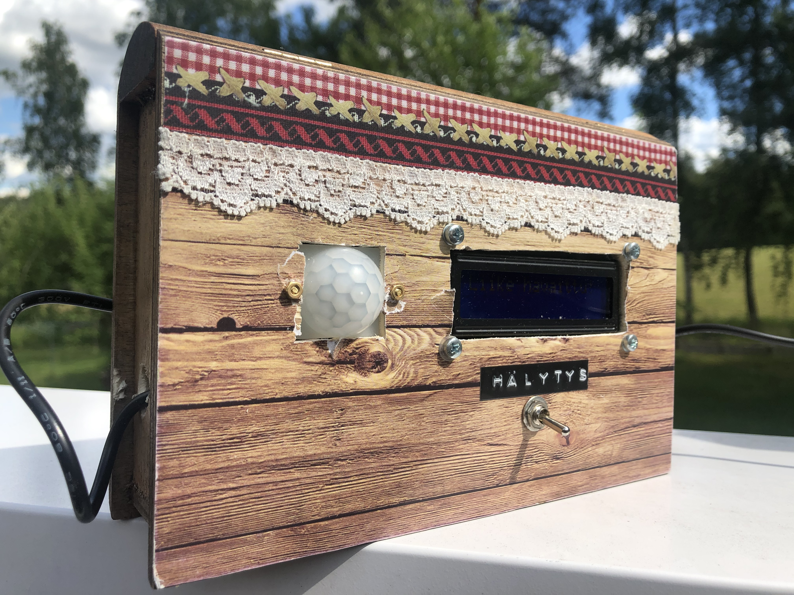
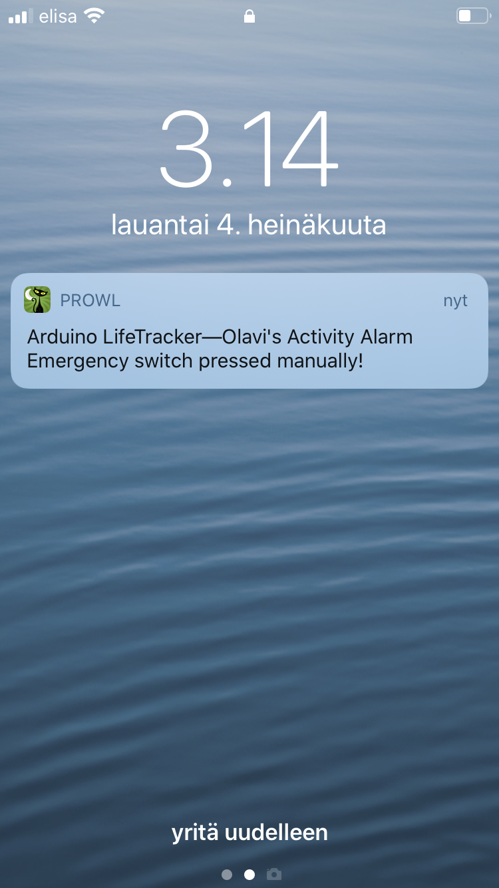
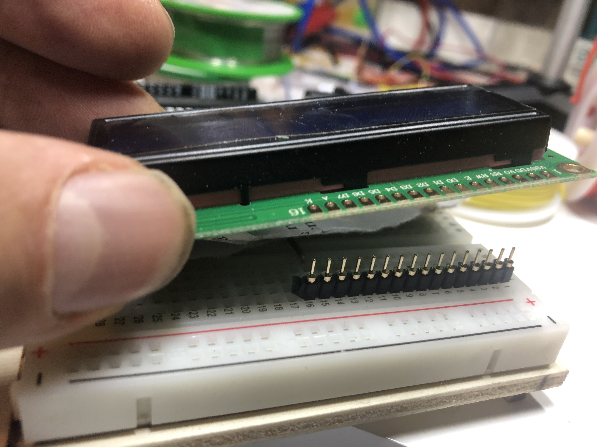
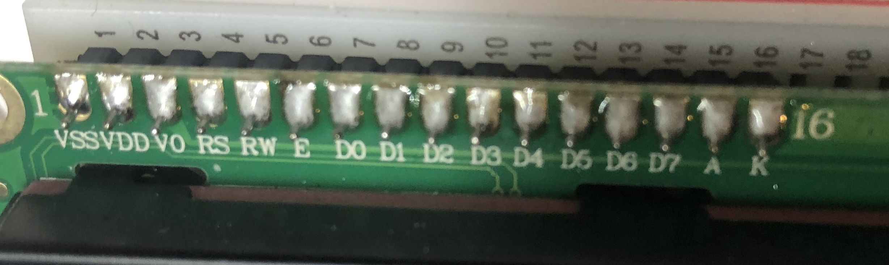
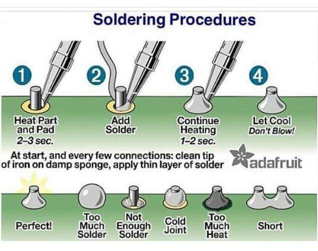

|
Jorkke's Life Tracker: Sends an alarm into your iPhone if your loved one, who lives far away, has been still for too long. 
Here you will find discussion on: |
|---|
|
|
Basic Usage |
|
The problem: your loved one, such as your father in his 80's, is living alone far away. How do you know everything is OK? How does he know that if he can't get out of the bed due to a seizure, you will know and can call for help?
 My solution was to utilize Prowl, a push notification client for iOS. It is available on Apple's App Store, has been available since 2009, costs $3 - a one-time fee only - and offers an API based on HTTP GET/POST -methods to send your own notifications, also from Arduino. The basic usage of the box goes like this:
That's it. |
|
Parts list |
|
The first aspect is to choose which Arduino-board to use. There are multiple choises available at the time of writing this with WiFi already built-in: Arduino Uno WiFi Rev2,
Arduino MKR WiFi 1010,
Arduino Nano 33 IoT and others. I chose the Arduino Uno WiFi Rev2 just because unlike the others, it is based on 5V architecture and the only LCD-displays I happened to have on stock were 5V-versions. There are ways to hack these into 3.3V-versions, but I chose to
order some 3.3V versions for the future and continue with the Arduino Uno WiFi Rev2 and a 5V LCD for now.
For a more detailed discussion on the LCD-display, see the Smart Pillbox -project from me. In the heart of this project is the HC-SR501 PIR Motion Sensor. Get familiar with Benne de Bakker's excellent tutorial regarding it. It is very important that you examine the effect of adjusting the two trimmers and the one trigger-jumper. As a starting point for your experiments, you might want to set the jumper into "repeating trigger"-position, and adjust the trimmers into their middle positions. As my mechanical skills are so limited, I am always looking for suitable ready-made boxes for my projects. I found the one I used here from a local discount-store selling cheap chinese stuff - this was in the same shelf as the diaries for teenage-girls etc :-) and they charged me 7 euros for it. I would never come up with something as cute as this just by myself, and it should please the eye of my 87-year old father as well. In addition to these, you need the usual stuff - Dupont-wires, pin-headers, one 220 Ohm resistor for the LCD-LED, a switch, one 10K resistor for the switch, one 10K-20K trimmer-potentiometer for the LCD contrast adjustment, one stripboard for the power-rail, power supply, M3 screws & nuts and also M2 screws & nuts for the HC-SR501. When all is thrown together, it looks like this:  |
|
Aspects in mechanics |
|
For me personally, this was again the most frustrating part. For example:
|
|
Electronic design |
|
This was simple - mostly coming up with conventions on what goes where so that the software can be written. The
LCD is connected in a similar manner as in my project for the Smart Pillbox, see the details
from there.
Other than that,
 As a first step, I attached the pin header to the breadboard in order to establish a "stand" so that the pin header meets the LCD in a 90-degree angle, as you can see on the left.  I place some support underneath the LCD so that it does not wiggle. I used soldering wire which was one millimeter in diameter (Sn96,5Ag3Cu0,5) and soldering station temperature set to 400 degrees Celcius. The result looks like you can see on the right - I must say that I have seen much worse results done by me in the past! After having done something like this, I always check with a multimeter that there are no shorts between the joints A good summary of a proper soldering technique is given by this picture: 
|
|
Software: |
|
The only nontrivial aspect in the software is communication with the outside world via WiFi. I used Prowl as it gave me just what I needed and nothing more. However, your needs could be different -
for example, perhaps you would like to communicate with an Android-based phone instead of an iPhone. Therefore, here are
some alternatives I am currently aware of and considered while implementing the Life Tracker:
You can download the Life Tracker -software from this link. Please note that all WiFI-network information, as well as Prowl API keys, have been removed, so you need to add those. |
|
Improvement possibilities: |
|
The main improvement need: currently the alarm information flows along a path where multiple elements could fail. A much
better solution would be having a "heartbeat" - a message on a regular interval, for example every 30 minutes, just
to inform that the data link works. Lack of heartbeat would then be an alarm in itself.
I like that there are no LED's (which tend to capture your attention without providing much information) - the LCD is more "discrete" than a bunch of LED's. If someone would try to make this into a commercial product then a solution into the WiFi password & Prowl API keys would be needed (other than hardcoding them into the software). The neatest approach I have seen so far was based on the device connecting into an iPhone via Bluetooth and acquiring the WiFi network information from there. That was cool. |
|
|
| First release of this page: July 5, 2020 |
|
Back to main page |